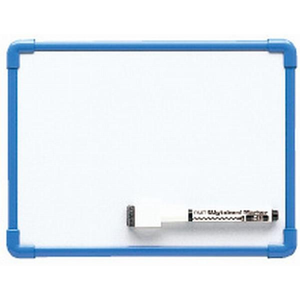
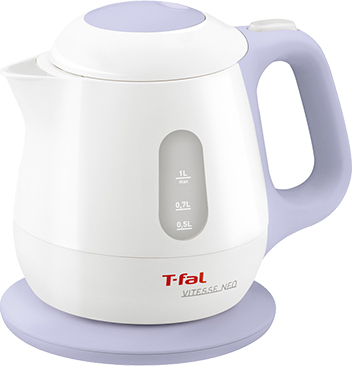
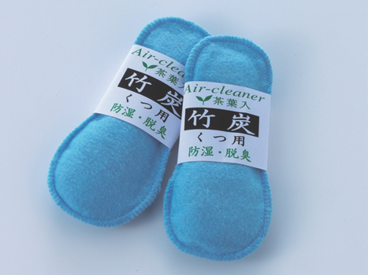
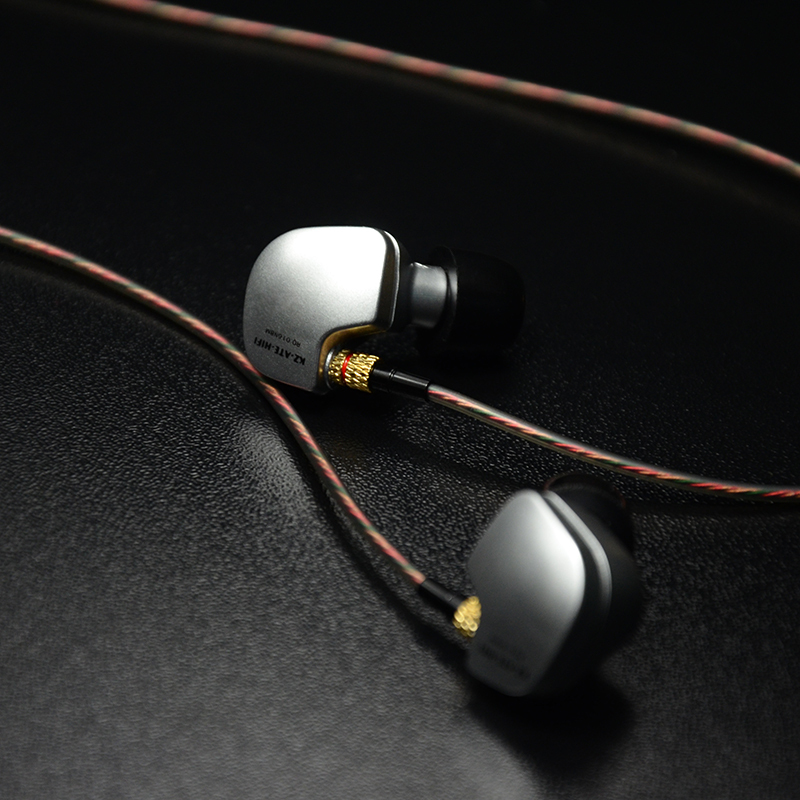
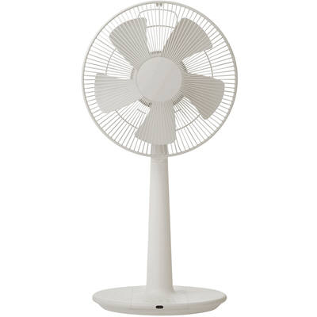
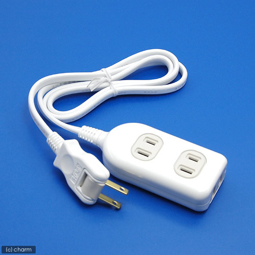

みんなも便利なもの見つけたら教えてください
新入生諸君も初めて親から離れて生活するため色々と不安があると思われる。
ここでは便利グッズについて紹介する。

寮では行事がたくさんあり、一秒でも遅れると減点が発生する。正直笑えない。
ここでは深く話さないが、減点以外にも辛いことも起こるので注意が必要だ。(この意味は多分入学式の日に分かる。･･･多分。)
そんな事態にならないようにホワイトボードが便利である。
減点が貯まるともちろん退寮になってしまうのでホワイトボードを駆使して生き残って欲しい。

電気ポットではなく電気ケトルである。 今知った。
寮食はオカズ(カタカナにした意味はない)は作り置きなので冷えている。 トースターはあり暖められるので安心して欲しい。
だが正直育ち盛りにはすこし少ないのでカップ麺が大活躍してくれる。
カップ麺あるところに電気ケトルあり。 なかったらしぬ

夏場は靴箱がとんでもない匂いが充満する。運動部の漢達の靴が大量に置かれるので無理もない。
しかしここは思いやり。 漢の嗜みである。また寮は通気が悪いので明日の登校時に蒸れている場合があるのでひとつは置いておいて欲しい。

寮ではたくさん辛いことも起きる。 そんな時は音楽が有効だ。
しかしスピーカーで流すと騒音で減点になってしまうので注意である。
筆者としては「Raise your flag」「アイロニ」「Naked Romance」がお勧めだ。
イヤホンについては高橋先輩に聞くと色々と教えてくれるだろう。

夏場エアコンが使えるが使用できる月が決まっており、また夜7時からと時間制限がある。
学校から寮に帰ってこれる時間が3時ぐらいだが使用できるようになるまで灼熱地獄である。
寮は一年二年は3人部屋なので3人で扇風機を使うとなかなかに涼しくなる。

友達と遊ぶときは必需品である。 また、扇風機を使うときにも重宝するだろう。
タコ足配線したら発火するとか聞きますけどアレほんとなんですかね?